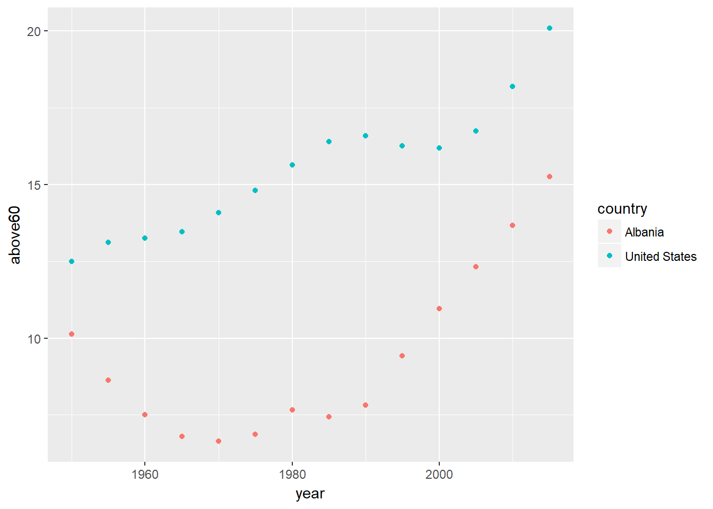
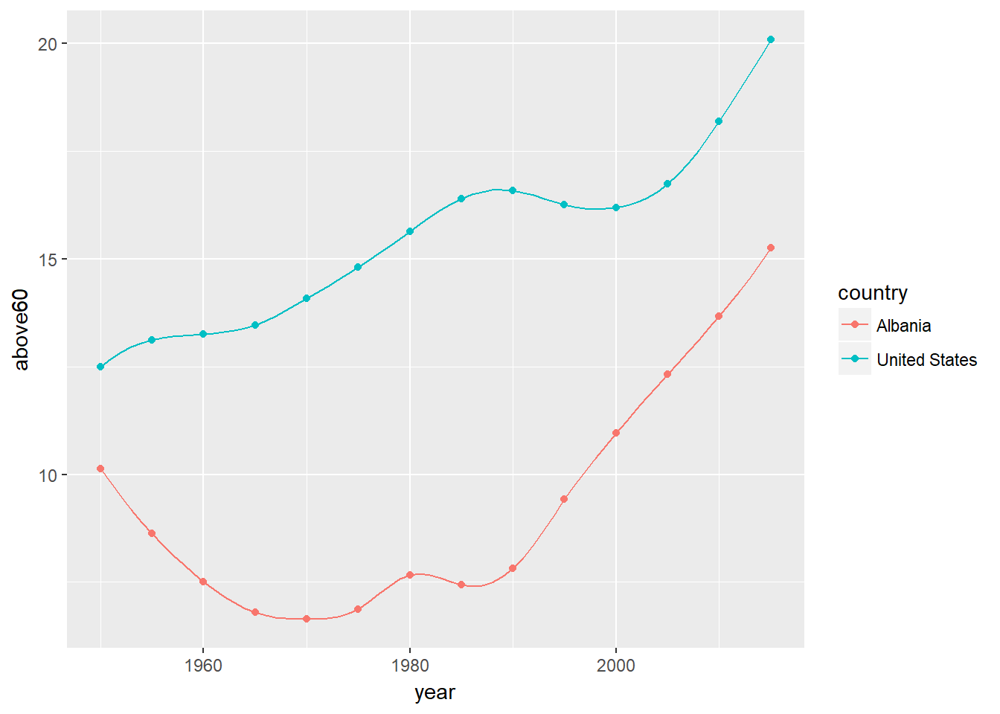

2.3 Data Collection
The data for this lesson comes from the Gapminder website. Again, you could just start with the tools application on the website instead of using the R code here. This section will be long but remember that data wrangling can take up to 80% of the time in a project.
First we will load two pacages we need. The data is downloaded in a Excel spreadsheet; we will use the package readxl to read it. In addition, R has a package called gapminder which is a subset of the data from the Gapminder website. We will use it to get country names to reduce the size of our data and exclude countries with a large amount of missing data.
library(readxl)
library(gapminder)
library(dplyr)
library(tidyverse)The data has been downloaded and is in the data folder on the GitHub site for this book.
gapminder_population_temp <- read_excel("data/indicator gapminder population.xlsx")
gapminder_population_temp## # A tibble: 275 x 82
## `Total~ `1800.~ `1810.~ `1820.~ `1830.~ `1840.~ `1850.~ `1860.~ `1870.~
## <chr> <dbl> <dbl> <dbl> <dbl> <dbl> <dbl> <dbl> <dbl>
## 1 Abkhaz~ NA NA NA NA NA NA NA NA
## 2 Afghan~ 3280000 3280000 3323519 3448982 3625022 3810047 3973968 4169690
## 3 Akroti~ NA NA NA NA NA NA NA NA
## 4 Albania 410445 423591 438671 457234 478227 506889 552800 610036
## 5 Algeria 2503218 2595056 2713079 2880355 3082721 3299305 3536468 3811028
## 6 Americ~ 8170 8156 8142 8128 8114 7958 7564 7057
## 7 Andorra 2654 2654 2700 2835 3026 3230 3436 3654
## 8 Angola 1567028 1567028 1597530 1686390 1813100 1949329 2110747 2285417
## 9 Anguil~ 2025 2025 2064 2177 2338 2511 2693 2888
## 10 Antigu~ 37000 37000 37000 37000 37000 37000 36532 35546
## # ... with 265 more rows, and 73 more variables: `1880.0` <dbl>, `1890.0`
## # <dbl>, `1900.0` <dbl>, `1910.0` <dbl>, `1920.0` <dbl>, `1930.0` <dbl>,
## # `1940.0` <dbl>, `1950.0` <dbl>, `1951.0` <dbl>, `1952.0` <dbl>,
## # `1953.0` <dbl>, `1954.0` <dbl>, `1955.0` <dbl>, `1956.0` <dbl>,
## # `1957.0` <dbl>, `1958.0` <dbl>, `1959.0` <dbl>, `1960.0` <dbl>,
## # `1961.0` <dbl>, `1962.0` <dbl>, `1963.0` <dbl>, `1964.0` <dbl>,
## # `1965.0` <dbl>, `1966.0` <dbl>, `1967.0` <dbl>, `1968.0` <dbl>,
## # `1969.0` <dbl>, `1970.0` <dbl>, `1971.0` <dbl>, `1972.0` <dbl>,
## # `1973.0` <dbl>, `1974.0` <dbl>, `1975.0` <dbl>, `1976.0` <dbl>,
## # `1977.0` <dbl>, `1978.0` <dbl>, `1979.0` <dbl>, `1980.0` <dbl>,
## # `1981.0` <dbl>, `1982.0` <dbl>, `1983.0` <dbl>, `1984.0` <dbl>,
## # `1985.0` <dbl>, `1986.0` <dbl>, `1987.0` <dbl>, `1988.0` <dbl>,
## # `1989.0` <dbl>, `1990.0` <dbl>, `1991.0` <dbl>, `1992.0` <dbl>,
## # `1993.0` <dbl>, `1994.0` <dbl>, `1995.0` <dbl>, `1996.0` <dbl>,
## # `1997.0` <dbl>, `1998.0` <dbl>, `1999.0` <dbl>, `2000.0` <dbl>,
## # `2001.0` <dbl>, `2002.0` <dbl>, `2003.0` <dbl>, `2004.0` <dbl>,
## # `2005.0` <dbl>, `2006.0` <dbl>, `2007.0` <dbl>, `2008.0` <dbl>,
## # `2009.0` <dbl>, `2010.0` <dbl>, `2011.0` <dbl>, `2012.0` <dbl>,
## # `2013.0` <dbl>, `2014.0` <dbl>, `2015.0` <dbl>From the gapminder package, we will get the subset of countries where the data is most complete.
countries<-levels(gapminder$country)Finally, we will wrangle the data into the final form needed.
gapminder_population<-gapminder_population_temp %>%
gather(year,pop,-"Total population") %>%
rename(country="Total population") %>%
mutate(year=as.integer(year),pop=as.integer(pop)) %>%
filter(country %in% countries,year>=1950)
gapminder_population## # A tibble: 9,174 x 3
## country year pop
## <chr> <int> <int>
## 1 Afghanistan 1950 7752118
## 2 Albania 1950 1263171
## 3 Algeria 1950 8872247
## 4 Angola 1950 4354882
## 5 Argentina 1950 17150335
## 6 Australia 1950 8177344
## 7 Austria 1950 6936445
## 8 Bahrain 1950 115614
## 9 Bangladesh 1950 37894680
## 10 Belgium 1950 8628489
## # ... with 9,164 more rowsBefore proceeding. We will check the quality of the data.
length(countries)## [1] 142length(unique(gapminder_population$country))## [1] 139There are 142 countries in the gapminder data but only 139 in the data we collected. These names might be different from those from the imported data. We will check that first.
countries[!(countries %in% unique(gapminder_population$country))]## [1] "Korea, Dem. Rep." "Korea, Rep." "Yemen, Rep."We are missing the two Koreas and Yemen from our data.
We need the full list of countries, so we have to start over.
gapminder_population<-gapminder_population_temp %>%
gather(year,pop,-"Total population") %>%
rename(country="Total population") %>%
mutate(year=as.integer(year),pop=as.integer(pop)) %>%
filter(year>=1950)
gapminder_population## # A tibble: 18,150 x 3
## country year pop
## <chr> <int> <int>
## 1 Abkhazia 1950 NA
## 2 Afghanistan 1950 7752118
## 3 Akrotiri and Dhekelia 1950 10661
## 4 Albania 1950 1263171
## 5 Algeria 1950 8872247
## 6 American Samoa 1950 18937
## 7 Andorra 1950 6197
## 8 Angola 1950 4354882
## 9 Anguilla 1950 5121
## 10 Antigua and Barbuda 1950 46301
## # ... with 18,140 more rowsunique(gapminder_population$country)[grep("Korea",unique(gapminder_population$country))]## [1] "North Korea" "South Korea" "United Korea (former)"unique(gapminder_population$country)[grep("Yemen",unique(gapminder_population$country))]## [1] "North Yemen (former)" "South Yemen (former)" "Yemen"We now know the problem is that in the gapminder package we have the titles “Korea, Dem. Rep.”
“Korea, Rep.”
“Yemen, Rep.”
while in our data from the gapminder website we have the names “North Korea”
“South Korea” “Yemen”
We will correct the names in the countries vector.
which(!(countries %in% unique(gapminder_population$country)))## [1] 70 71 140countries[70]="North Korea"
countries[71]="South Korea"
countries[140]="Yemen"We will check our data again.
sum(!(countries %in% unique(gapminder_population$country)))## [1] 0gapminder_population<-gapminder_population_temp %>%
gather(year,pop,-"Total population") %>%
rename(country="Total population") %>%
mutate(year=as.integer(year),pop=as.integer(pop)) %>%
filter(country %in% countries,year>=1950)
gapminder_population## # A tibble: 9,372 x 3
## country year pop
## <chr> <int> <int>
## 1 Afghanistan 1950 7752118
## 2 Albania 1950 1263171
## 3 Algeria 1950 8872247
## 4 Angola 1950 4354882
## 5 Argentina 1950 17150335
## 6 Australia 1950 8177344
## 7 Austria 1950 6936445
## 8 Bahrain 1950 115614
## 9 Bangladesh 1950 37894680
## 10 Belgium 1950 8628489
## # ... with 9,362 more rowsAs a check, we will look for missing observations.
gapminder_population[is.na(gapminder_population$pop),]## # A tibble: 2 x 3
## country year pop
## <chr> <int> <int>
## 1 Taiwan 2014 NA
## 2 Taiwan 2015 NAWe are missing the last two years of data for Taiwan. We could drop Taiwan or get another estimate of the population from the web. Using the website http://www.worldometers.info/world-population/taiwan-population/ we see that for the last four years the population has grown by about 70000 each year. So we will estimate the population for 2014 and 2015 by adding 70000 to the population in 2013 for each year..
gapminder_population[is.na(gapminder_population$pop),][1,3]=23151000 + 70000
gapminder_population[is.na(gapminder_population$pop),][1,3]=23151000 + 140000Now we need to add the continents to the dataframe.
dict<-gapminder %>% group_by(continent) %>% distinct(country) %>%
mutate(country=as.character(country))We still have the problem with the three countries.
dict$country[is.na(match(dict$country,countries))]## [1] "Korea, Dem. Rep." "Korea, Rep." "Yemen, Rep."dict$country[is.na(match(dict$country,countries))]=c("North Korea","South Korea","Yemen")Now we will add continent to the data.
gapminder_population <- gapminder_population %>%
left_join(dict,by="country") %>%
select(country,continent,year,pop)
gapminder_population## # A tibble: 9,372 x 4
## country continent year pop
## <chr> <fctr> <int> <dbl>
## 1 Afghanistan Asia 1950 7752118
## 2 Albania Europe 1950 1263171
## 3 Algeria Africa 1950 8872247
## 4 Angola Africa 1950 4354882
## 5 Argentina Americas 1950 17150335
## 6 Australia Oceania 1950 8177344
## 7 Austria Europe 1950 6936445
## 8 Bahrain Asia 1950 115614
## 9 Bangladesh Asia 1950 37894680
## 10 Belgium Europe 1950 8628489
## # ... with 9,362 more rowsClean up by removing temporary objects.
rm(gapminder_population_temp)Next we bring in life expectancy data.
gapminder_lifeexp_temp <- read_excel("data/indicator life_expectancy_at_birth.xlsx")gapminder_lifeexp<-gapminder_lifeexp_temp %>%
gather(year,life_exp,-"Life expectancy") %>%
rename(country="Life expectancy") %>%
mutate(year=as.integer(year)) %>%
filter(country %in% countries,year>=1950)
rm(gapminder_lifeexp_temp)
gapminder_lifeexp## # A tibble: 9,514 x 3
## country year life_exp
## <chr> <int> <dbl>
## 1 Afghanistan 1950 26.8
## 2 Albania 1950 54.5
## 3 Algeria 1950 42.8
## 4 Angola 1950 30.7
## 5 Argentina 1950 61.6
## 6 Australia 1950 69.0
## 7 Austria 1950 64.9
## 8 Bahrain 1950 41.0
## 9 Bangladesh 1950 42.5
## 10 Belgium 1950 66.3
## # ... with 9,504 more rowsgapminder_lifeexp <- gapminder_lifeexp %>%
left_join(dict,by="country") %>%
select(country,continent,year,life_exp)
gapminder_lifeexp## # A tibble: 9,514 x 4
## country continent year life_exp
## <chr> <fctr> <int> <dbl>
## 1 Afghanistan Asia 1950 26.8
## 2 Albania Europe 1950 54.5
## 3 Algeria Africa 1950 42.8
## 4 Angola Africa 1950 30.7
## 5 Argentina Americas 1950 61.6
## 6 Australia Oceania 1950 69.0
## 7 Austria Europe 1950 64.9
## 8 Bahrain Asia 1950 41.0
## 9 Bangladesh Asia 1950 42.5
## 10 Belgium Europe 1950 66.3
## # ... with 9,504 more rowsNext is fertility rates.
gapminder_fertility_temp <- read_excel("data/indicator undata total_fertility.xlsx")gapminder_fertility<-gapminder_fertility_temp %>%
gather(year,fertility,-"Total fertility rate") %>%
rename(country="Total fertility rate") %>%
mutate(year=as.integer(year)) %>%
filter(country %in% countries,year>=1950)
rm(gapminder_fertility_temp)
gapminder_fertility## # A tibble: 9,372 x 3
## country year fertility
## <chr> <int> <dbl>
## 1 Afghanistan 1950 7.67
## 2 Albania 1950 5.80
## 3 Algeria 1950 7.65
## 4 Angola 1950 6.93
## 5 Argentina 1950 3.16
## 6 Australia 1950 3.07
## 7 Austria 1950 1.87
## 8 Bahrain 1950 7.03
## 9 Bangladesh 1950 6.23
## 10 Belgium 1950 2.30
## # ... with 9,362 more rowsWe need to check for missing values.
sum(is.na(gapminder_fertility$fertility))## [1] 2gapminder_fertility[is.na(gapminder_fertility$fertility),]## # A tibble: 2 x 3
## country year fertility
## <chr> <int> <dbl>
## 1 Taiwan 2014 NA
## 2 Taiwan 2015 NAIt is the country of Taiwan again that has missing values. I will estimate the fertility with average of the previous 5 years.
temp<-as.double(gapminder_fertility %>% filter(country=="Taiwan",year<2014 & year>2008) %>% summarise(ave=mean(fertility)))
gapminder_fertility<-gapminder_fertility %>% replace_na(list(fertility=temp))
rm(temp)gapminder_fertility <- gapminder_fertility %>%
left_join(dict,by="country") %>%
select(country,continent,year,fertility)
gapminder_fertility## # A tibble: 9,372 x 4
## country continent year fertility
## <chr> <fctr> <int> <dbl>
## 1 Afghanistan Asia 1950 7.67
## 2 Albania Europe 1950 5.80
## 3 Algeria Africa 1950 7.65
## 4 Angola Africa 1950 6.93
## 5 Argentina Americas 1950 3.16
## 6 Australia Oceania 1950 3.07
## 7 Austria Europe 1950 1.87
## 8 Bahrain Asia 1950 7.03
## 9 Bangladesh Asia 1950 6.23
## 10 Belgium Europe 1950 2.30
## # ... with 9,362 more rowsTotal above 60 (%)
Another thought may be that developed countries have an older population by percentage. We will next collect data on the percent of population above 60 years in age.
gapminder_above60_temp <- read_excel("data/indicator_total above 60 percen.xlsx")gapminder_above60<-gapminder_above60_temp %>%
gather(year,above60,-"Total above 60 (%)") %>%
rename(country="Total above 60 (%)") %>%
mutate(year=as.integer(year)) %>%
filter(country %in% countries,year>=1950)
rm(gapminder_above60_temp)
gapminder_above60## # A tibble: 2,835 x 3
## country year above60
## <chr> <int> <dbl>
## 1 Afghanistan 1950 4.50
## 2 Albania 1950 10.1
## 3 Algeria 1950 6.81
## 4 Angola 1950 4.94
## 5 Argentina 1950 7.04
## 6 Australia 1950 12.5
## 7 Austria 1950 15.4
## 8 Bahrain 1950 4.35
## 9 Bangladesh 1950 5.38
## 10 Belgium 1950 15.9
## # ... with 2,825 more rowssum(is.na(gapminder_above60$above60))## [1] 0No missing values.
But the data is only for every 5 years and has projections.
unique(gapminder_above60$year)## [1] 1950 1955 1960 1965 1970 1975 1980 1985 1990 1995 2000 2005 2010 2015
## [15] 2020 2025 2030 2035 2040 2045 2050We will first remove the projections.
gapminder_above60 <- gapminder_above60 %>% filter(year <= 2015)Before we interpolate, let’s look at two countries to get an idea of the data.
p<-gapminder_above60 %>% filter(country=="Albania" | country=="United States") %>%
ggplot(aes(x=year,y=above60,color=country))+
geom_point()
p
We will use a spline to interpolate the data.
temp1<-data.frame(with(gapminder_above60 %>%
filter(country=="Albania"),approx(year,above60,xout=seq(1950,2015)))) %>%
mutate(country="Albania")
temp2<-data.frame(with(gapminder_above60 %>%
filter(country=="United States"),approx(year,above60,xout=seq(1950,2015)))) %>%
mutate(country="United States")temp1<-data.frame(with(gapminder_above60 %>%
filter(country=="Albania"),spline(year,above60,xout=seq(1950,2015)))) %>%
mutate(country="Albania")
temp2<-data.frame(with(gapminder_above60 %>%
filter(country=="United States"),spline(year,above60,xout=seq(1950,2015)))) %>%
mutate(country="United States")p+
geom_line(data=temp1,mapping=aes(x=x,y=y)) +
geom_line(data=temp2,mapping=aes(x=x,y=y))
Now we need to interpolate for every country and create our final data frame.
temp<-gapminder_above60 %>% filter(country==“Albania” | country == “United States”) tempa<-data.frame(country=rep(c(“Albania”,“United States”),each=66),year=rep(seq(1950,2015),each=2)) tempa<-as.tibble(tempa %>% mutate(country=as.character(country))) tempa %>% full_join(temp,by=“country”)
gapminder_above60_temp <- gapminder_above60 %>%
left_join(dict,by="country") %>%
select(country,continent,year,above60)
gapminder_above60_temp## # A tibble: 1,890 x 4
## country continent year above60
## <chr> <fctr> <int> <dbl>
## 1 Afghanistan Asia 1950 4.50
## 2 Albania Europe 1950 10.1
## 3 Algeria Africa 1950 6.81
## 4 Angola Africa 1950 4.94
## 5 Argentina Americas 1950 7.04
## 6 Australia Oceania 1950 12.5
## 7 Austria Europe 1950 15.4
## 8 Bahrain Asia 1950 4.35
## 9 Bangladesh Asia 1950 5.38
## 10 Belgium Europe 1950 15.9
## # ... with 1,880 more rowsData quality check
table(gapminder_population$continent)/66##
## Africa Americas Asia Europe Oceania
## 52 25 33 30 2table(gapminder_lifeexp$continent)/67##
## Africa Americas Asia Europe Oceania
## 52 25 33 30 2table(gapminder_fertility$continent)/66##
## Africa Americas Asia Europe Oceania
## 52 25 33 30 2table(dict$continent)##
## Africa Americas Asia Europe Oceania
## 52 25 33 30 2for (name in (dict %>% filter(continent=="Asia"))$country){
if (length((gapminder_fertility %>% filter(country==name))$year)==0){print(name)}
}